Heygo 的传感器和 App 一起工作：把你脚下每一个弯读出来、讲明白，再告诉你下一趟练什么。
读数据、理解数据、理解你，最后都落到 App 里你能看到、能照着做的东西上。
两枚传感器夹在左右雪鞋侧壁，打开 App 点 Go 就开始记录。不用做任何校准动作，滑几个弯它就认准了安装位置。
双脚动作以 100Hz 持续记录。Heygo 把一趟拆成一段段、一个个弯，认出你在走刃还是搓雪，记下立刃角、速度和弯形。
每一段都按时机、施压、流畅度、相似度四个维度给出 Heygo IQ。每次都和你自己之前比，找出属于你的问题。
滑行中耳机里有简短提示；一趟结束有单趟报告；一天结束有全天报告，讲清问题在哪、为什么、下一趟练什么。
下面每一张都是 Heygo App 的真实界面，数据来自同一位单板滑手的同一个雪天（已匿名）：
「11 趟滑完，搓雪整体比上一次上雪发挥得好，收尾那几趟还把状态往上提了一截。」第一句就是拿今天和你上一次比，它记得你上次滑成什么样。
Heygo 洞察把今天拆成四步：数据（今天记到 19 次甩板尾，多在后刃）→ 归因（转弯一开始后脚先动，板头还没接上方向）→ 技能（让前脚先改变刃角）→ 练习。
Heygo IQ 占比把今天和前一个雪天放在一起，一眼看出更多时间滑在了更高的分段。下面直接给出下次训练要练的两个动作。
时机、施压、流畅度、相似度四条线随每一趟变化；第 6 趟的低谷和之后的回升清清楚楚。前刃、后刃的立刃角分开画。
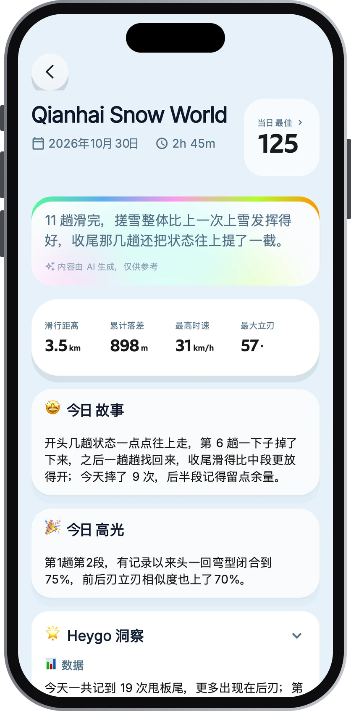
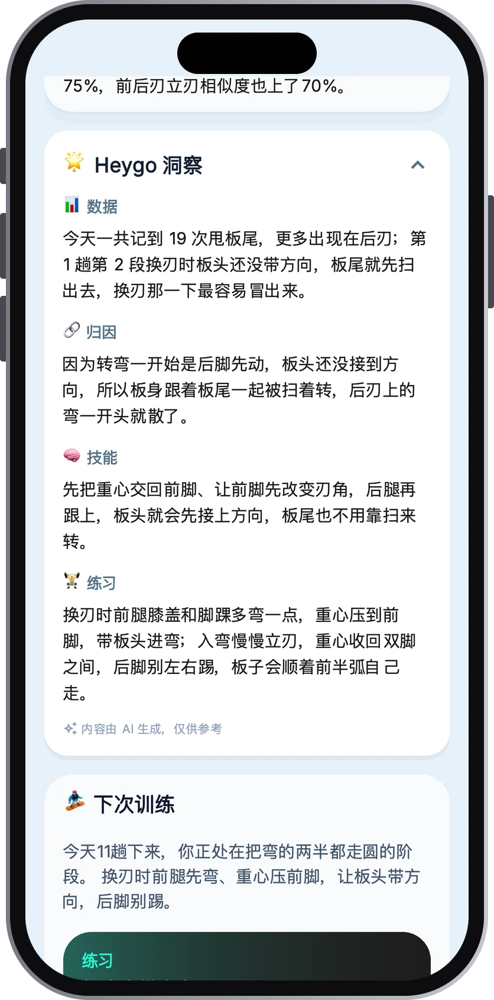
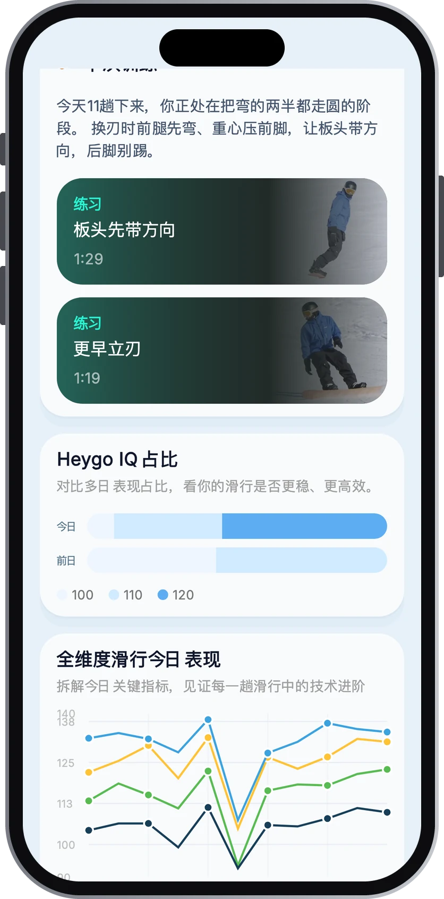
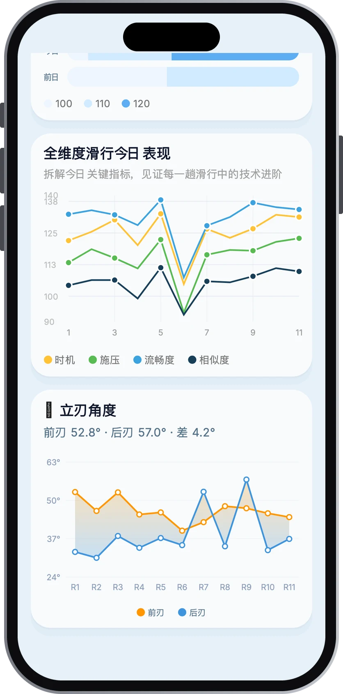
这一天的第 6 趟分数掉到 100。趟间对比直接列出：弯型 −25、节奏 −18、压力释放 −16、施压质量 −14。
「换刃一直拖到板头快朝山下才做，雪板顺着坡度加速的时间被拉长，速度就越攒越快。」原因落在具体哪几段、前刃还是后刃。
缆车上就能看到「下一趟」怎么做，以及配套练习「更早立刃」，带示范视频。
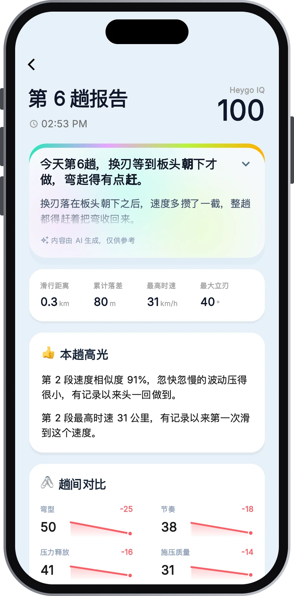
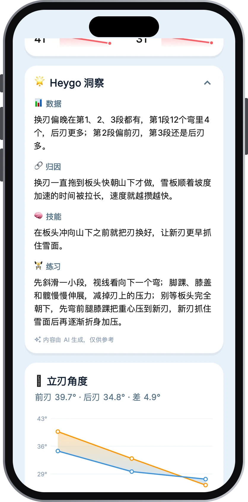
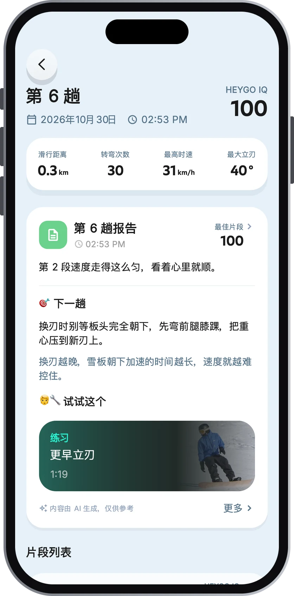
当天最好的一段，Heygo IQ 125：「这一段大部分弯的节奏间隔接近，弯与弯之间接得顺，换弯的压力释放稳多了。」
时机 133、施压 122、流畅度 138、相似度 111。每个维度都能点开，往下看到立刃流畅度、节奏、弯型这些进阶指标。
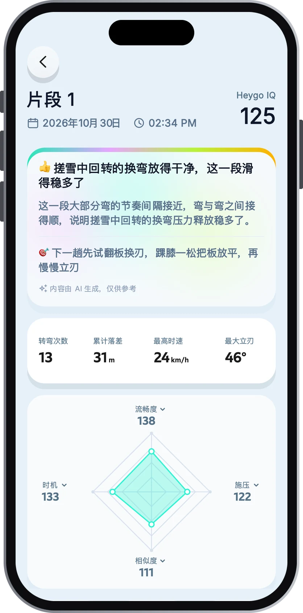
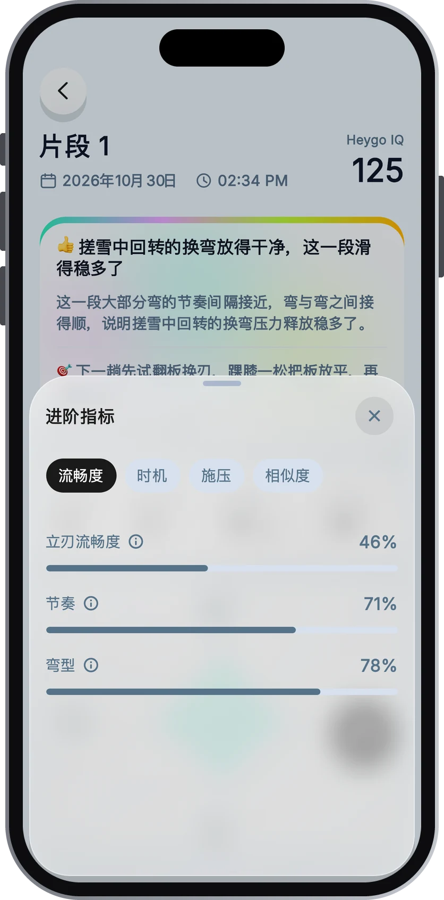
最佳弯形按真实轨迹还原，可以切换按速度或按立刃角着色，前刃、后刃各占半边。
每个弯的最高时速、最大立刃和转弯半径都记着，前刃弯和后刃弯用图标分开。
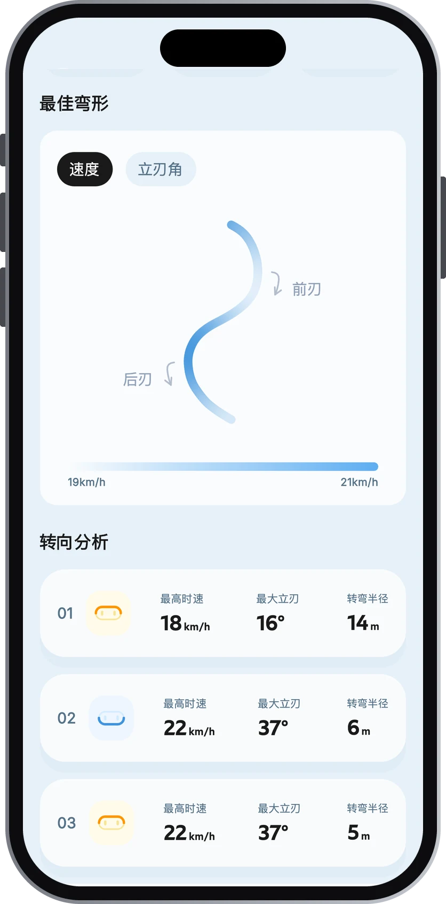
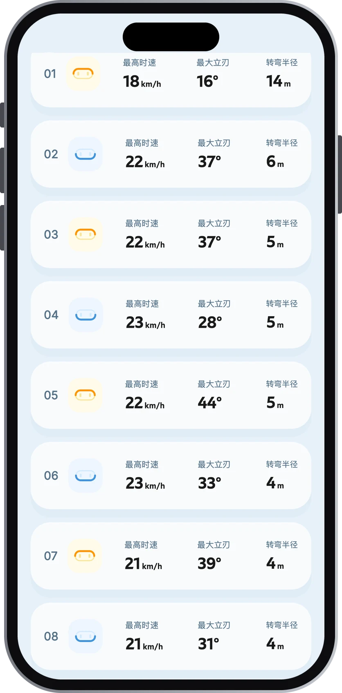
「翻板换刃」：要练什么、分几步做，一页写清楚，下一趟就能照着练。
详细、简洁、静音三种模式。认真练的时候多提醒，放松滑的时候只说要紧的。
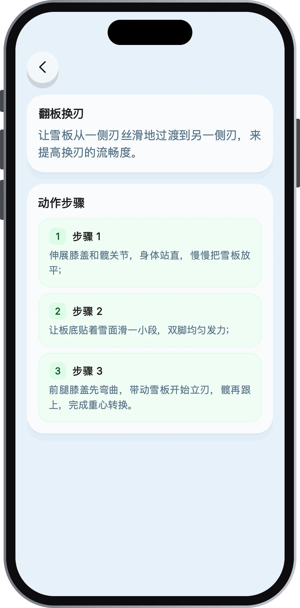
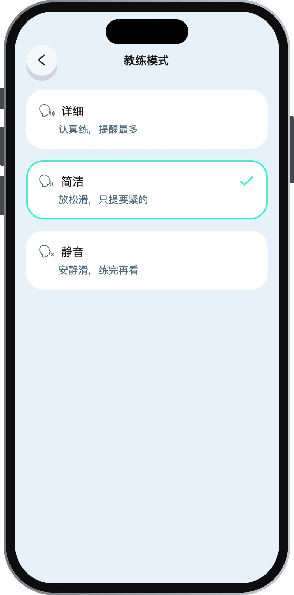
Heygo 不拿你和别人比。它先认识你，再记住你，每一份报告都建立在你自己之前的数据上。
前几个弯 Heygo 在认准你的安装位置，不需要你停下来做任何动作。
坐上缆车就能看到这一趟的分数、亮点和下一趟练什么。
最大立刃 50°。第一份全天报告给出了这一天的起伏和最该练的动作。
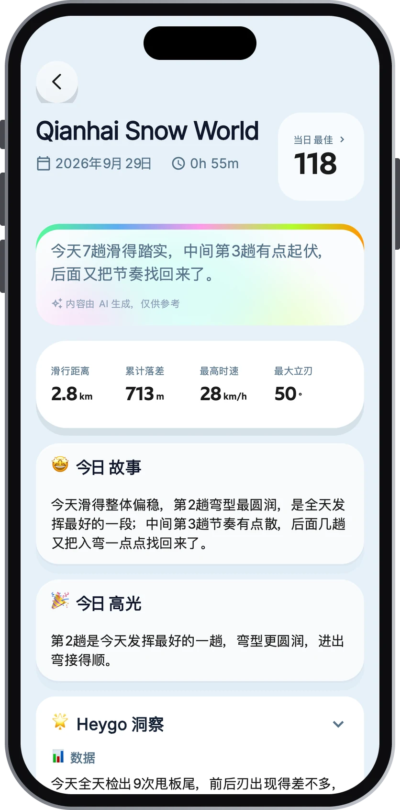
最大立刃 57°。报告第一句就是和上一次比：「搓雪整体比上一次上雪发挥得好」。数据越多，它越懂你。
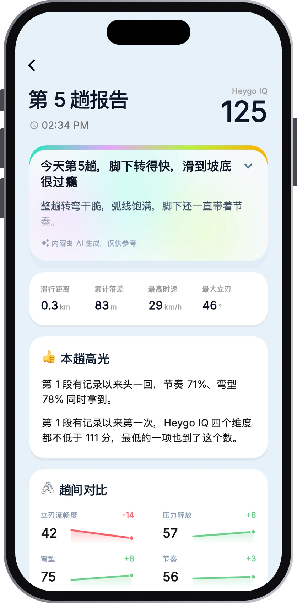